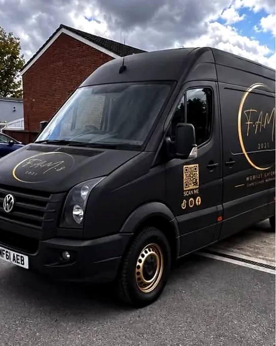

Mobile catering · Surrey · since 2021
Family food,
beautifully served.
F.A.M.s is Florin, Alexandra, Mirela and Sofia. We cook fresh, we bring the kitchen with us, and we cater weddings, parties and events across Surrey.

- Family-run
- Est. 2021
- Cooked fresh on the day
- Surrey & beyond
What we cater
Four kinds of day,
one way of working.
Weddings
We work to your timings, your venue and your guest list — not to a fixed package.
Private parties
Birthdays, anniversaries, christenings, or a garden full of people on a Saturday.
Corporate events
Launches, open days and staff days. We bring our own kitchen, so you don’t need one.
Special occasions
Anything that doesn’t fit a category. Tell us what you’re planning.

Good food.
Great people.
Lasting memories.
F.A.M.s · Creating Memories
On the road
The kitchen comes to you.
A black-and-gold VW Crafter, and the reason we can cater a village hall, a marquee or a garden with no kitchen in it.
See the gallery

How it works
Three steps,
then a good day.
- 01
Tell us about it
The date, the place, and roughly how many people you need fed.
- 02
We talk it through
Menu, serving times, and how the food actually reaches your guests.
- 03
We park and cook
You spend the day with your guests instead of in a kitchen.
Tell us what
you’re planning.
A date, a rough guest number, a postcode. Send whatever you have and we’ll take it from there.
Start an enquiry